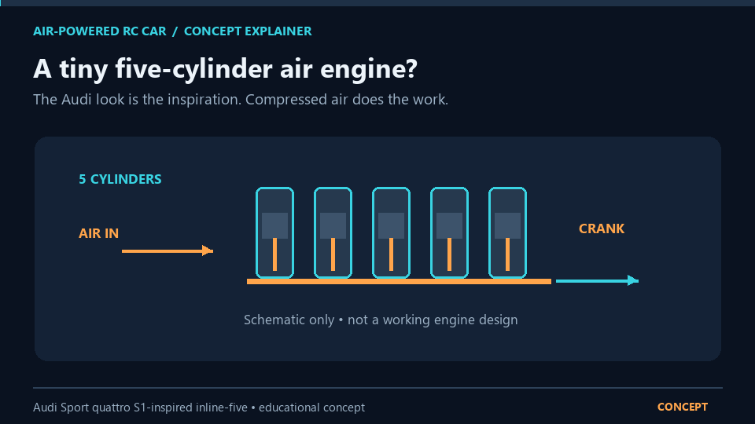

Animated concept explainer. The single-cylinder CAD model is a separate first-step study, not the five-cylinder final engine.
A staged design-and-test project: begin with a single-cylinder, hand-turned mechanism, learn the crank-and-flywheel layout, then investigate whether a safe compressed-air power system can meet the RC car goals.
Current stage: concept model — not yet tested
A visual slider-crank layout to help study the piston, connecting rod, crankshaft, and flywheel. It has not been validated as a moving assembly.
Interactive chapter-by-chapter lesson covering the project targets, engine concepts, components, safety limits, testing, and progress reporting. Voiceover is included in the lesson.
The lesson pulls its matching narration WAV from the project release assets.
Requirements, staged build plan, risks, safety boundary, and a progress-update template for sharing evidence with family or a mentor.